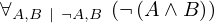
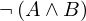
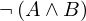
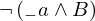
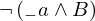
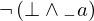
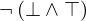
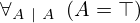

Show the Proof¶
In [1]:
import proveit
# Automation is not needed when only showing a stored proof:
proveit.defaults.automation = False # This will speed things up.
proveit.defaults.inline_pngs = False # Makes files smaller.
%show_proof
Out[1]:
| step type | requirements | statement | ||
|---|---|---|---|---|
| 0 | generalization | 1 | ⊢  | |
| 1 | instantiation | 4, 2, 3 |  , ,  ⊢  ⊢  | |
 : , : ,  : :  , ,  : :  | ||||
| 2 | instantiation | 4, 5, 6 | ⊢  | |
: , : , :  | ||||
| 3 | instantiation | 7, 8 | ⊢  | |
| : | ||||
| 4 | theorem | ⊢  | ||
| proveit.logic.equality.sub_left_side_into | ||||
| 5 | theorem | ⊢  | ||
| proveit.logic.booleans.conjunction.false_and_true_negated | ||||
| 6 | instantiation | 9, 10 | ⊢  | |
| : | ||||
| 7 | axiom | ⊢  | ||
| proveit.logic.booleans.negation.negation_elim | ||||
| 8 | assumption | ⊢ | ||
| 9 | axiom | ⊢  | ||
| proveit.logic.booleans.eq_true_intro | ||||
| 10 | assumption | ⊢ | ||